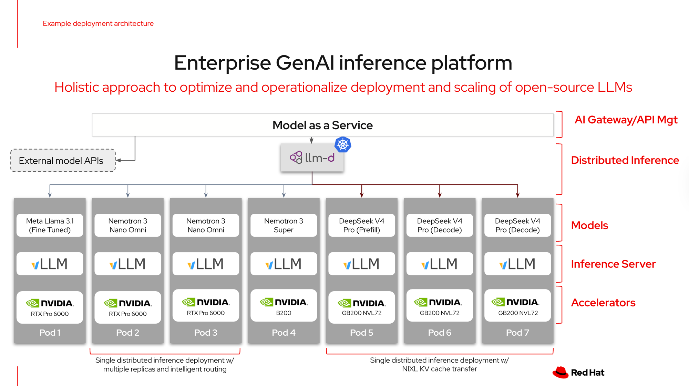
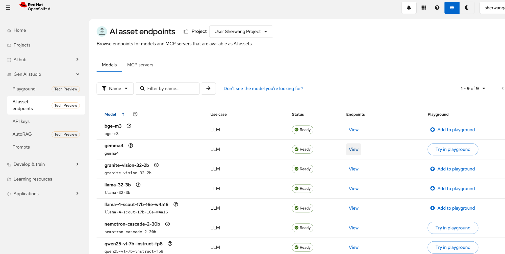
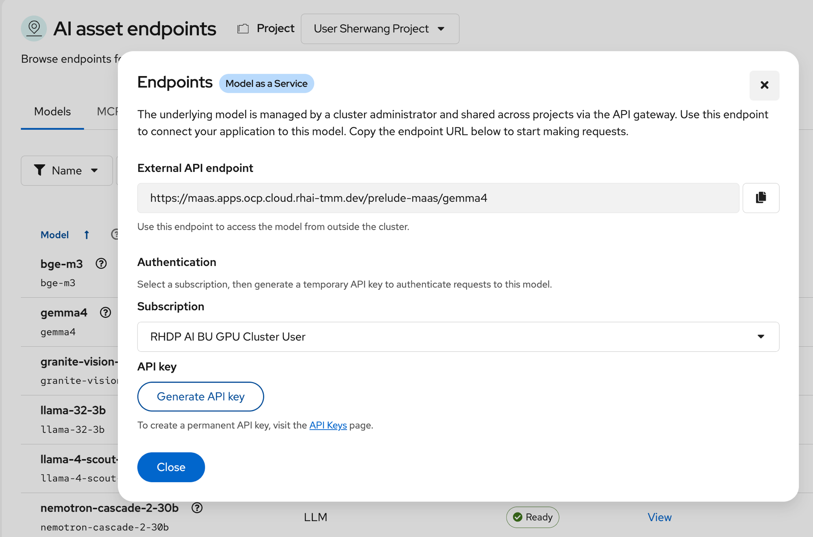
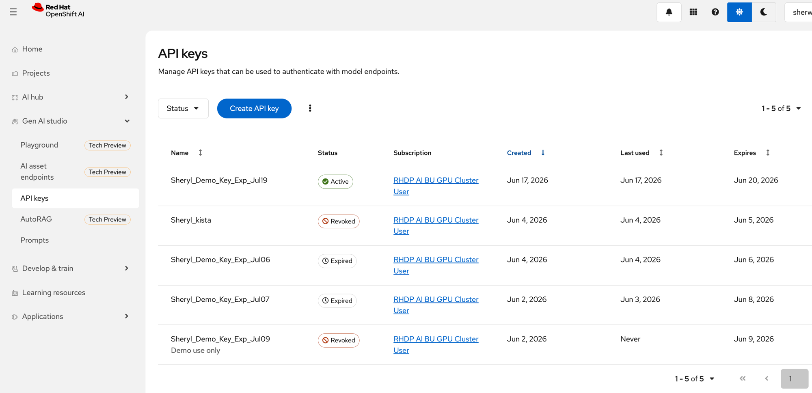
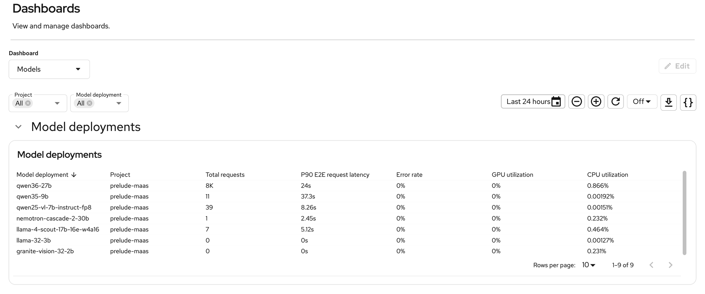
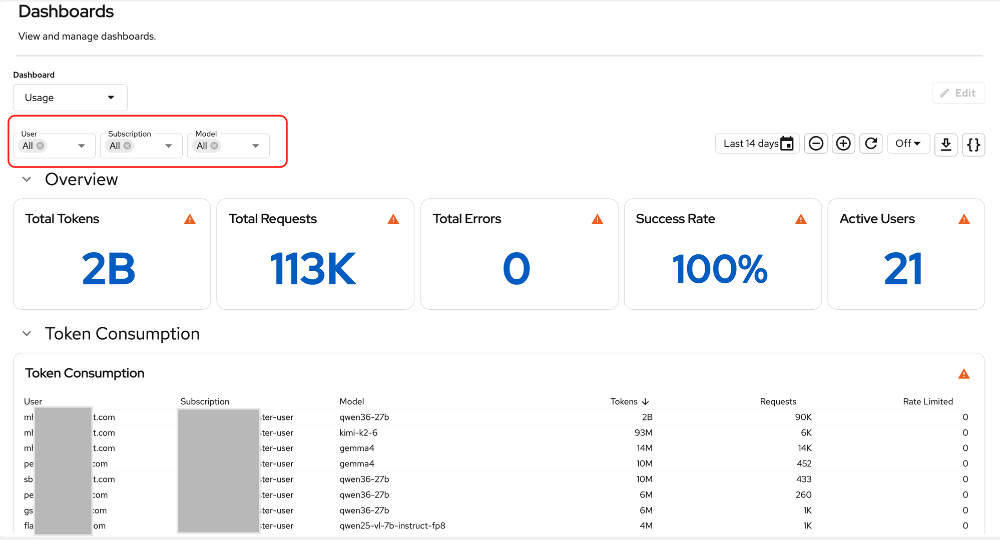
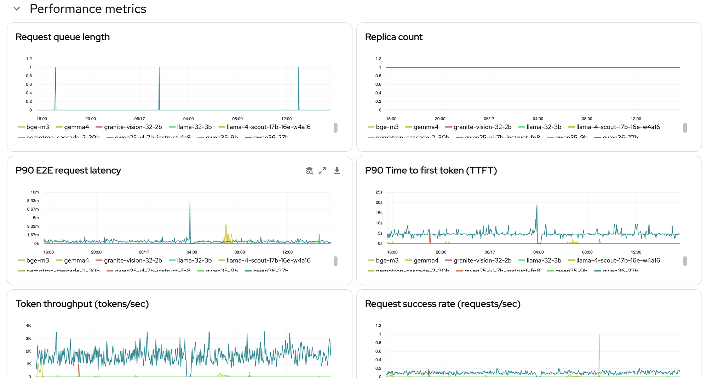
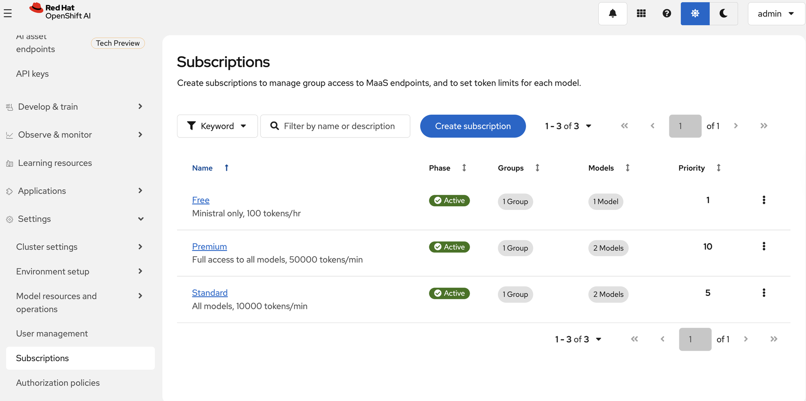
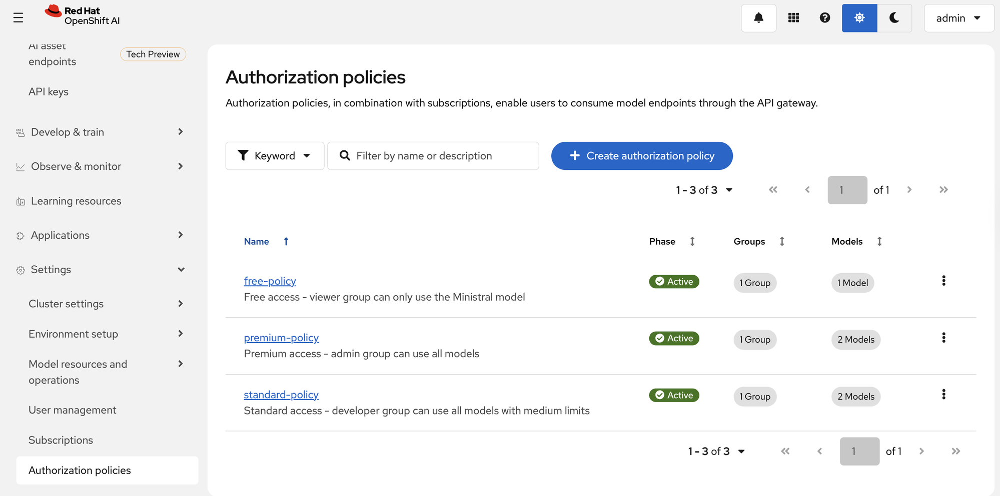
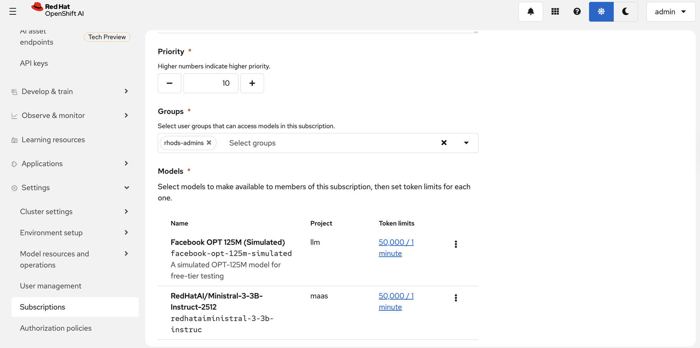

Red Hat Models as a Service
Uncontrolled Spend
- 70-80% of API tokens wasted on tasks that don't need frontier models
- No centralized visibility into per-team, per-app token usage
- CFOs see unpredictable, escalating monthly invoices
Data Leakage Risk
- Proprietary code, customer data, and IP sent to public SaaS endpoints
- No PII stripping, no guardrails, no audit trail
- Regulatory and compliance exposure grows with every call
Fragmented Operations
- Every team picks their own model, API key, and provider
- Disjoint approaches with repeated lessons learned
- IT has zero visibility into what models are being used or why
Tame Shadow AI
Route all LLM calls through the AI Gateway. Enforce policy based on identity and get instant visibility into consumption.
Choose Smart
One API gateway, one access token, many models. Developers self-select the right model — local open-source for routine work, external frontier only when justified.
Bring It Home
llm-d intelligently routes inference across tiered NVIDIA silicon — right-sizing every workload for maximum ROI.
"An approach to providing AI models as consumable, shared resources via API endpoints — enabling private, scalable AI adoption across the enterprise."
Self-Service Access
Developers get fast, secure API access to approved AI models — no IT tickets needed.
Centralized Governance
Eliminate shadow AI with centrally managed token quotas, rate limits, and API keys.
Cost Visibility
Granular tracking to allocate costs across teams and projects accurately.
Kubernetes-Native
All policies managed through standard Kubernetes CRDs — no separate management plane.
- Self service with access policy
- Rate limiting per user, group, project
- Safety & content filtering
- PII censored
- Input/output detectors
- Token consumption
- Infrastructure & platform usage
What IT Gains
Visibility & cost control
Every token tracked. Every cost attributed. One observability stack for all teams.
Safety & guardrails
Control behavior and prevent data leakage, via policy right at the gateway.
Developer self-service
Developers pick the right model — no ticket, no wait.
On-prem inference on tiered silicon
KServe & llm-d orchestrate vLLM on NVIDIA GPUs. Data never leaves the cluster.

Token Quotas & Rate Limiting
Per-team rate limits and token budgets defined via Kubernetes-native CRDs (subscriptions).
Self-Service API Keys
Developers generate keys scoped to their subscriptions — bound at creation time and instantly revocable.
Showback Dashboards
Aggregate token consumption tracking per model and subscription group, embedded in the dashboard.
Enterprise Authentication
OIDC-compatible authorization layer supporting Azure AD, Okta, and Keycloak.
External Model Routing
OpenAI-compatible endpoint routes to local models or external providers. Applications don't need to know where the model runs.
Key Minting Getting access to a model
(OIDC / OpenShift token)
subscription
returned 🔑
Inference Making a model request
with API key
hash lookup + expiry
access check
check
model ✅









Centralized governance eliminates Shadow AI — every model call routed through a single control plane.
Self-service access for developers — browse models, generate API keys, start building. No tickets needed.
Cost visibility & token attribution per user, team, and model — CFOs get predictable, explainable AI spend.
Kubernetes-native — no separate management plane. Subscriptions, policies, and rate limits are standard CRDs.
Flexible deployment — on-prem open-source models on GPU-agnostic infrastructure, plus external APIs when justified.